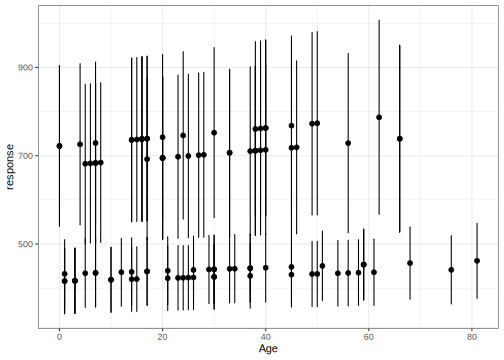

8.3 Método de Máxima Pseudo-Verosimilitud
El anterior método tiene la particularidad de que \(y_{i}\) son IID, en la vida real muchas veces no es posible poder cumplir ese supuesto. En los procedimientos actuales se recurre a obtener una muestra compleja mediante la realización de conglomerados que tengan alguna relación particular de aglomeración para luego estratificarlos y llegar al individuo de interés que nos proporcione información sobre el estudio. Con esa muestra compleja cumplimos con que todos los individuos tienen una probabilidad de inclusión desigual sin la necesidad de utilizar un marco muestral.
A partir de eso Pfeffermann(1993) discutió la posibilidad de hacer inferencia en la población partiendo de la información de una muestra, para esto se propuso crear un pseudo-parámetro que tenga en cuenta el diseño muestral, es decir, que el score \(u_{i}\) sea ponderado por el inverso de la probabilidad de inclusión que denominaremos \(u_{i}\). Este método es conocido como Máxima Pseudo Verosimilitud(MPV).
\[ L(\theta)=\prod_{i=1}^{n}w_{i}f(y_{i},\theta) \] Para un mejor manejo de esta función se sugiere aplicar propiedades de los logaritmos generando la siguiente función:
\[ l(\theta)=\sum_{i=1}^{n}\ln[w_{i}f(y_{i},\theta)] \]
Calculando las derivadas parciales de \(L(\theta)\) con respecto a \(\theta\) e igualando a cero tenemos un sistema de ecuaciones como sigue:
\[ \dfrac{\partial l(\theta)}{\partial\theta}=\sum_{i=1}^{n}w_{i}u_{i}(\theta)=0 \]
donde \(ui=\partial\ln[f(y_{i},\theta)]/\partial\theta\) es el vector de “score” de elementos \(i,i\in n\) ponderado por \(w_{i}\), ahora definiremos \(T\) como:
\[ T=\sum_{i=1}^{n}w_{i}u_{i}(\theta)=0 \] Mediante la linealización de Taylor y considerando los resultados de Binder(1983), podemos obtener una varianza asintóticamente insesgada de la siguiente forma:
\[ V_{p}(\hat{\theta}_{M}PV)\cong[J(\theta_{U})]^{-1}V_{p}(T)[J(\theta_{U})]^{-1} \]
donde,
\[ J(\theta_{U})=\sum_{i\in U}\dfrac{\partial u_{i}(\theta)}{\partial(\theta)}\mid_{\theta=\theta_{U}} \]
La estimación de la varianza anterior está definida por:
\[ \hat{V}_{p}(\hat{\theta}_{MPV})\cong[\hat{J}(\hat{\theta}_{MPV})]^{-1}\hat{V}_{p}(T)[\hat{J}(\hat{\theta}_{MPV})]^{-1} \] donde,
\[ \hat{J}(\theta_{MPV})=\sum_{i\in U}w_{i}\dfrac{\partial u_{i}(\theta)}{\partial(\theta)}\mid_{\theta=\theta_{MPV}} \]
MPV para una distribución Bernoulli
Las ecuaciones de verosimilitud dadas anteriormente, conllevan a aplicar la técnica de pseudo-verosimilitud, para la cual, en primer lugar, se definen:
\[ u_{k}(\theta)=\frac{y_{k}-\theta}{\theta(1-\theta)} \] Luego, las ecuaciones de pseudo-verosimilitud son:
\[ \sum_{k=1}^{n}w_{k}u_{k}(\theta)=\sum_{k=1}^{n}w_{k}\frac{y_{k}-\theta}{\theta(1-\theta)} \]
Por lo tanto, al igualar a cero, se tiene que:
\[ \sum_{k=1}^{n}w_{k}y_{k}-\theta\sum_{k=1}^{n}w_{k}=0 \]
Por lo anterior, al despejar, se tiene que el estimador de máxima pseudo-verosimilitud, está dado por:
\[ \hat{\theta}_{MPV}=\frac{\sum_{k=1}^{n}w_{k}y_{k}}{\sum_{k=1}^{n}w_{k}}=\frac{\hat{t}_{y,\pi}}{\hat{N}}=\tilde{y}_{S}=\tilde{p}_{d} \]
Luego, el estimador de la varianza de \(\hat{\theta}_{MPV}\) es:
\[ \hat{V}_{p}(\hat{\theta}_{MPV})\cong[\hat{J}(\hat{\theta}_{MPV})]^{-1}\hat{V}_{p}(\hat{t}_{u\pi})[\hat{J}(\hat{\theta}_{MPV})]^{-1} \]
donde
\[ \hat{J}(\theta_{MPV})=\sum_{i\in U}w_{i}\dfrac{\partial u_{i}(\theta)}{\partial(\theta)}\mid_{\theta=\hat{\theta_{MPV}}}=\frac{\hat{N}}{\tilde{y}_{S}(1-\tilde{y}_{S})}=\frac{\hat{N}}{\tilde{p}_{d}(1-\tilde{p}_{d})} \]
Por ejemplo, bajo un muestreo aleatorio simple sin reemplazo, se tiene que el estimador de máxima pseudo-verosimilitud es \(\hat{\theta}_{MPV}=\bar{y}_{S}\). Además, la estimación de su varianza es:
\[ \hat{V}_{MAS}(\hat{t}_{u\pi})=\frac{N^{2}}{n}\left(1-\frac{n}{N}\right)S_{\hat{u}_{S}}^{2}=\frac{N^{2}}{n}\left(1-\frac{n}{N}\right)\frac{1}{n-1}\sum_{k=1}^{n}(\hat{u}_{k}-\bar{\hat{u}})^{2} \]
Luego, teniendo en cuenta que bajo este diseño de muestreo, se tiene que \(\bar{\hat{u}}=0\) y que \(\hat{N}=N\), entonces el estimador de la varianza de \(\hat{\theta}_{MPV}\) es:
\[ \hat{V}_{MAS}(\hat{\theta}_{MPV})\cong\frac{1}{n}\left(1-\frac{n}{N}\right)S_{y_{S}}^{2} \] Nótese que la anterior expresión, coincide plenamente con la estimación de la varianza de la media muestral, es decir \(\hat{V}_{MAS}(\hat{\theta}_{MPV})=\hat{V}_{MAS}(\bar{y}_{S})\).
MPV para una distribución normal
Siguiendo el mismo orden de la sección de Máxima Verosimilitud, se ilustrará el método de Máxima Pseudo Verosimilitud, suponga que \(f(y;\theta)\) sigue una función de distribución normal.
\[ f(y;\theta)=\dfrac{1}{\sqrt{2\pi\sigma^{2}}}\exp\left[-\dfrac{1}{2}\left(\dfrac{y_{i}-\theta^{2}}{\sigma^{2}}\right)w_{i}\right] \]
Aplicaremos la productoria para llegar a la probabilidad conjunta:
\[ L(\theta)=\prod_{i=1}^{n}\dfrac{1}{\sqrt{2\pi\sigma^{2}}}\exp\left[-\dfrac{1}{2}\left(\dfrac{y_{i}-\theta^{2}}{\sigma^{2}}\right)w_{i}\right] \]
Con algo de algebra llegamos a:
\[ L(\theta)=(2\pi\sigma^{2})^{-n/2}\exp[(-\dfrac{1}{2\sigma^{2}}\sum_{i=1}^{n}(y_{i}-\theta^{2})w_{i}] \]
Utilizamos logaritmos tenemos:
\[ l(\theta)=ln(2\pi\sigma^{2})^{-n/2}[-\dfrac{1}{2\sigma^{2}}\sum_{i=1}^{n}(y_{i}-\theta^{2})w_{i}] \] Maximizamos la anterior expresión con derivadas parciales tenemos:
\[ \partial l(\theta)/\partial\theta=\dfrac{1}{\sigma^{2}}\sum_{i=1}^{n}(y_{i}-\theta^{2})w_{i}=0 \]
Despejando \(\theta\), se llega a un resultado interesante:
\[ \theta=\dfrac{\sum_{i=1}^{n}y_{i}}{\sum_{i=1}^{n}w_{i}}=\dfrac{\hat{t}_{y\pi}}{\hat{N}}=\tilde{Y} \]
Esto nos conlleva que, para la función \(\theta\) una estimación es el promedio muestral ponderado.
MPV para una regresión múltiple
Con el modelo de la forma \(X'\beta\) se tiene una matriz \(X\) de dimensión \(n\times i\), donde \(n\) es el tamaño de la muestra e \(i\) es el número de variables predictoras, también una matriz \(W\) diagonal, con los \(w_{i}\), de tamaño \(n\times n\), y, por último, se define dos vectores, uno \(Y\) de tamaño \(n\) como la variable de interés y otro \(\beta\) de tamaño \(i\). Con estas condiciones se puede definir una función de verosimilitud de la siguiente manera. Conociendo la función de distribución normal de \(X\)
\[ f(Y;X\beta)=\dfrac{1}{\sqrt{2\pi\sigma^{2}}}\exp\left[-\dfrac{1}{2\sigma^{2}}(Y-X\beta)'W(Y-X\beta)\right] \]
Se halla la probabilidad conjunta matricialmente:
\[ L(Y;X\beta)=\prod_{i=1}^{n}\dfrac{1}{\sqrt{2\pi\sigma^{2}}}\exp\left[-\dfrac{1}{2\sigma^{2}}(Y-X\beta)'W(Y-X\beta)\right] \] Simplificando la anterior expresión se llega a:
\[ L(Y;X\beta)=(2\pi\sigma^{2})^{-N/2}-\exp\left[\dfrac{1}{2\sigma^{2}}(Y'WY-Y'WX\beta-(X\beta)'WY+(X\beta)'WX\beta)\right] \]
Para poder derivar mejor, se aplica propiedades de los logaritmos:
\[ l(Y;X\beta)=ln(2\pi\sigma^{2})^{-N/2}-\dfrac{1}{2\sigma^{2}}(Y'WY-Y'WX\beta-(X\beta)'WY+(X\beta)'WX\beta) \] Maximizando el anterior resultado conoceremos el score \(T\):
\[ T=\dfrac{\partial l(Y;X\beta)}{\partial\beta}=-\dfrac{1}{2\sigma^{2}}(-2X'WY+2X'WX\beta) \]
Despejando \(\beta\) tenemos el siguiente resultado:
\[ \beta=(X'WX)^{-1}(X'Y) \] Con este \(\beta\) podemos estimar un modelo partiendo de una muestra probabilística compleja.
A continuación, se ejemplifican los códigos computacionales para los modelos lineales generalizado. Inicialmente, se carga la base de datos como sigue:
Cargue de las bases de datos,
library(survey)
library(srvyr)
encuesta <- readRDS("Data/encuesta.rds")
data("BigCity", package = "TeachingSampling")Luego, se define la variable pobreza con los datos de la base como sigue:
diseno <- diseno %>%
mutate(
pobreza = ifelse(Poverty != "NotPoor", 1, 0),
desempleo = ifelse(Employment == "Unemployed", 1, 0))A continuación, se carga el tema de la CEPAL con el que se realizarán las gráficas:
Para la ejemplificación de la metodología de este capítulo, se definirá primero el modelo Gamma.
Modelo gamma para variable continua
La función de enlace \(g(\cdot)\) para el GLM con una variable dependiente distribuida por un modelo Gamma es el recíproco, \(\frac{1}{\mu_{i}}\). Eso significa que el valor esperado de \(y_i\) observado, (\(E(y_i) = \mu_i\)), está relacionado con sus variables de entrada como, por ejemplo,
\[ \frac{1}{\mu_{i}} = B_0 + B_1x_1 \] o, similarmente:
\[ \mu_{i} = \frac{1}{B_0 + B_1x_1} \] Ahora bien, para el ajuste del modelo Gamma, primero se definen los pesos qweigth como sigue:
mod_qw <- lm(wk ~ Age + Sex + Region + Zone,
data = encuesta)
encuesta$wk2 <- encuesta$wk/predict(mod_qw)
diseno <- encuesta %>%
as_survey_design( strata = Stratum,
ids = PSU, weights = wk2,
nest = T)El modelo ajustado es el siguiente:
modelo <- svyglm(formula = Income ~ Age + Sex +
Region + Zone,
design = diseno,
family = Gamma(link = "inverse"))
broom::tidy(modelo)| term | estimate | std.error | statistic | p.value |
|---|---|---|---|---|
| (Intercept) | 0.0024054 | 0.0002192 | 10.9726242 | 0.0000000 |
| Age | -0.0000018 | 0.0000014 | -1.2837541 | 0.2018776 |
| SexMale | -0.0000910 | 0.0000494 | -1.8422509 | 0.0680837 |
| RegionSur | -0.0000528 | 0.0002279 | -0.2315853 | 0.8172827 |
| RegionCentro | 0.0000305 | 0.0002202 | 0.1382979 | 0.8902533 |
| RegionOccidente | 0.0002363 | 0.0002317 | 1.0196070 | 0.3101123 |
| RegionOriente | 0.0000088 | 0.0002747 | 0.0319219 | 0.9745911 |
| ZoneUrban | -0.0009295 | 0.0001906 | -4.8762260 | 0.0000036 |
De la tabla anterior, el intercepto, la variable edad y la zona rural resultaron significativo tomando una confianza del 95%.
Por otro lado, es útil la estimación de la dispersión que ofrece svyglm de forma predeterminada dado que no tiene en cuenta la información especial sobre la dispersión que se puede calcular utilizando la distribución Gamma. No todos los GLM tienen una forma mejorada y específica del modelo para estimar.
## [1] 0.4830962Luego, el parámetro de dispersión es:
## variance SE
## [1,] 0.59097 0.0876Los coeficientes del modelo también se pueden obtener de la siguiente manera:
| Estimate | Std. Error | t value | Pr(>|t|) | |
|---|---|---|---|---|
| (Intercept) | 0.0024054 | 0.0002192 | 10.9726242 | 0.0000000 |
| Age | -0.0000018 | 0.0000014 | -1.2837541 | 0.2018776 |
| SexMale | -0.0000910 | 0.0000494 | -1.8422509 | 0.0680837 |
| RegionSur | -0.0000528 | 0.0002279 | -0.2315853 | 0.8172827 |
| RegionCentro | 0.0000305 | 0.0002202 | 0.1382979 | 0.8902533 |
| RegionOccidente | 0.0002363 | 0.0002317 | 1.0196070 | 0.3101123 |
| RegionOriente | 0.0000088 | 0.0002747 | 0.0319219 | 0.9745911 |
| ZoneUrban | -0.0009295 | 0.0001906 | -4.8762260 | 0.0000036 |
Una vez estimado los coeficientes, se estiman los intervalos de confianza para la predicción como sigue:
pred <- data.frame(predict(modelo, type = "response", se = T))
pred_IC <- data.frame(confint(predict(modelo, type = "response", se = T)))
colnames(pred_IC) <- c("Lim_Inf", "Lim_Sup")
pred <- bind_cols(pred, pred_IC)
pred$Income <- encuesta$Income
pred$Age <- encuesta$Age
pred %>% slice(1:6L)| response | SE | Lim_Inf | Lim_Sup | Income | Age |
|---|---|---|---|---|---|
| 456.8271 | 41.80366 | 374.8934 | 538.7607 | 409.87 | 68 |
| 434.3813 | 38.07031 | 359.7649 | 508.9977 | 409.87 | 56 |
| 423.5225 | 37.33444 | 350.3483 | 496.6966 | 409.87 | 24 |
| 441.2123 | 39.35438 | 364.0792 | 518.3455 | 409.87 | 26 |
| 416.6866 | 37.77570 | 342.6476 | 490.7257 | 409.87 | 3 |
| 436.1285 | 38.36471 | 360.9351 | 511.3219 | 823.75 | 61 |
A continuación, como se ha mostrado anteriormente, se realiza un Scaterplot de la predicción:
pd <- position_dodge(width = 0.2)
ggplot(pred %>% slice(1:100L),
aes(x = Age , y = response)) +
geom_errorbar(aes(ymin = Lim_Inf,
ymax = Lim_Sup),
width = .1,
linetype = 1) +
geom_point(size = 2, position = pd) +
theme_bw()